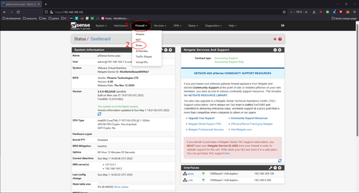
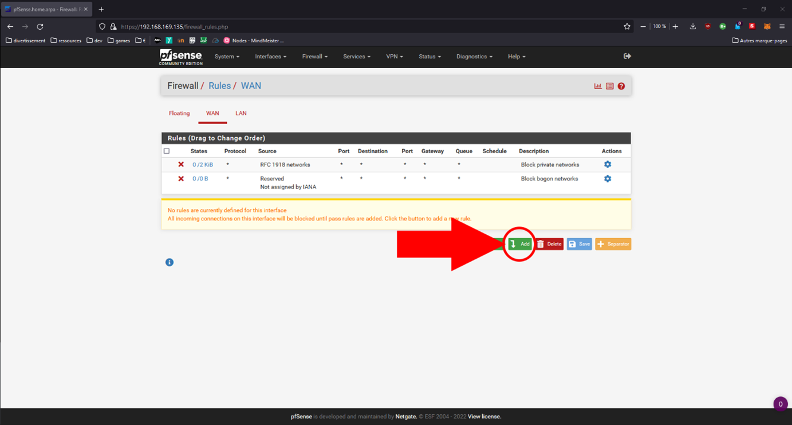
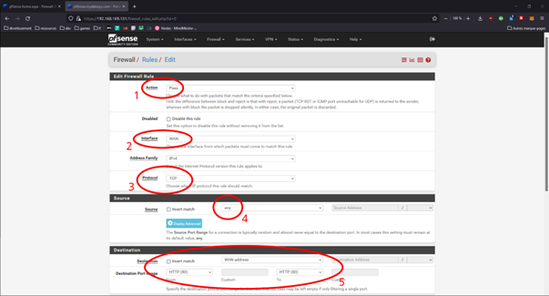

Protection: Services de protection
Gestion des Ports
Pour ouvrir ou fermer des ports sur votre firewall la démarche est la suivante :
Une fois sur la page « Rules » a vous de choisir sur quel interface réseau voulez-vous agir.
Puis cliquez sur le bouton « Add » en bas de l’interface :

Tout comme dans la configuration du firewall vous devez désormais paramétrer :
1. L’action
2. L’interface
3. Le protocole
4. La source
5. La destination ainsi que le port à ouvrir sur lequel vous souhaitez agir
Par defaut tous les ports sont ouverts sur le réseau LAN, libre à vous des les fermer.
Sans l’intervention d’un professionnel il est toute fois possible que vous intervenez sur des ports nécessaires au bon fonctionnement de votre réseau et de vos services (le port utilisé par le service de sauvegarde par exemple).